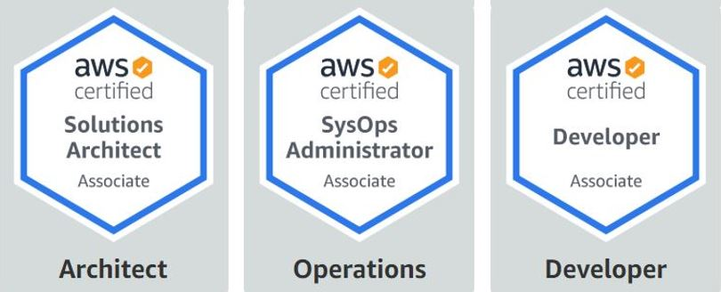

The Associate Certificate is for those who have at least one year of experience solving problems and implementing solutions using the AWS cloud. There are three different role-based exams.

AWS Certified Solutions Architect
Certificate intended for individuals who perform a solutions architect role.
What skills are illustrated?
- Effectively demonstrate knowledge of how to architect and deploy secure and robust applications on AWS technologies
- Define a solution using architectural design principles based on customer requirements
- Provide implementation guidance based on best practices to the organization throughout the life cycle of the project
AWS Certified SysOps Administrator
Certificate intended for systems administrators in a systems operations role.
What skills are illustrated?
- Deploy, manage, and operate scalable, highly available, and fault-tolerant systems on AWS
- Implement and control the flow of data to and from AWS
- Select the appropriate AWS service based on compute, data, or security requirements
- Identify appropriate use of AWS operational best practices
- Estimate AWS usage costs and identify operational cost control mechanisms
- Migrate on-premises workloads to AWS
AWS Certified Developer
Certificate intended for individuals who perform a developemnt role.
What skills are illustrated??
- Demonstrate an understanding of core AWS services, uses, and basic AWS architecture best practices
- Demonstrate proficiency in developing, deploying, and debugging cloud-based applications using AWS